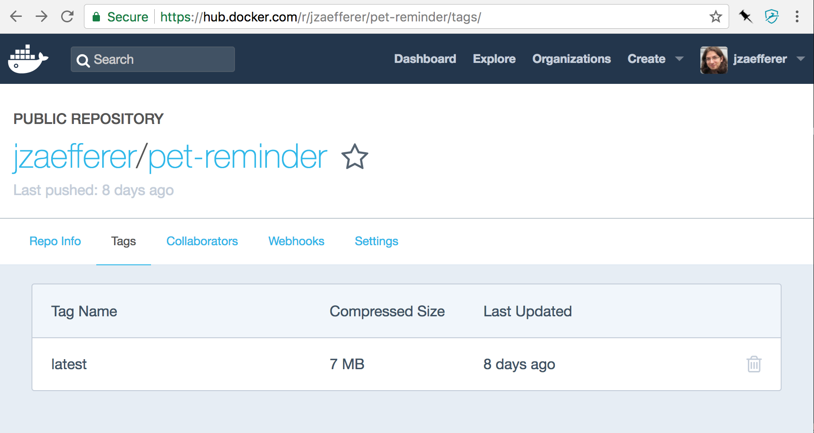
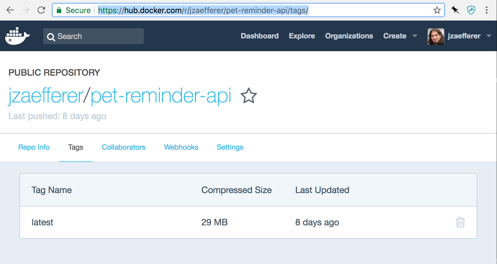

Docker for JavaScript Developers
'bout me
- 11 years writing JavaScript
- jQuery, jQuery UI, QUnit
- Commercial products like SoundCloud
- Head of development sloppy.io
'bout you
Have you worked with Docker?
Why Docker?
- Works on Windows, OSX and Linux
- Manage different version like node/npm
- Deploy to cloud, with less vendor lock-in
Let's look at code!
All on GitHub:
- github.com/jzaefferer/docker-for-js-devs web app based on create-react-app
- github.com/jzaefferer/docker-for-nodejs-devs rest backend, nodejs and express, with CouchDB
Docker locally
Dockerfile
.dockerignore
docker-compose.yml
docker-compose up --build
docker-compose up --build
http://localhost:3000/
Dockerfile, nodejs
docker-compose.yml, nodejs
http://localhost:7777/v1/pets
Building for production
Dockerfile, nodejs
Dockerfile-prod, nodejs
Building for nodejs
Dockerfile-prod, webpack/nginx
Dockerfile-prod, webpack/nginx
Building for webpack/nginx, stage 1
Building for webpack/nginx, stage 2


Deploying containers
Self-host Docker in VM, with any VM hoster
- AWS
- DigitalOcean
- Azure
- ...any
- other
- VM
- hoster...
Self-host Docker-orchestration platform in VM
- Docker Swarm
- Kubernetes
- DC/OS
- Rancher
- Dokku
Use hosted Docker-orchestration platform
- usually Kubernetes...
- Google Container Engine
- Amazon Elastic Container Service
- Azure Container Service
Use hosted Docker
- hyper.sh
- zeit.co/now
- sloppy.io
sloppy.yml, webpack/nginx
sloppy change sloppy.yml
web project on sloppy.io
sloppy.yml, nodejs
sloppy change sloppy.yml, nodejs
api project on sloppy.io
To Be Improved
- Skipped: Runtime configuration for static HTML
- Unsolved: Linter und (unit) test setup
- Unsolved: Updating lock files inside container
Closing
- Docker locally
- Building for production
- Deploying